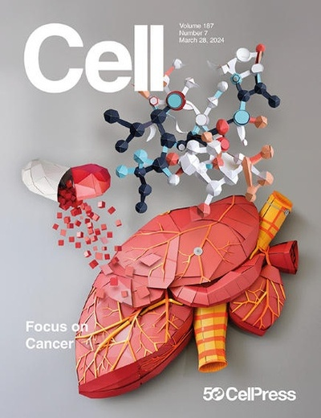
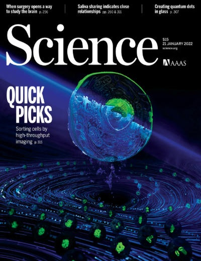
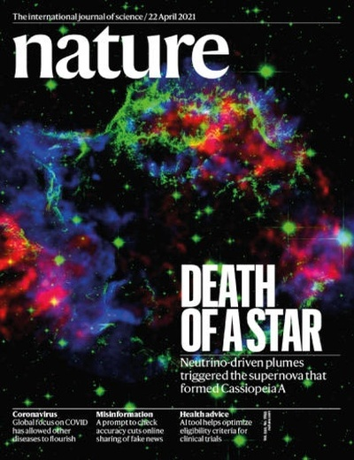

I am an AI Postdoc at Stanford.
I developed LabClaw, MedOS, and scMetabolism, and organized OpenIO.
With works in Cell, Science, & Nature, I am advised by Qiang Gao, Le Cong, and Mengdi Wang at Fudan and Stanford.
I believe in AI. I build agents & world models for the transition to programmable medicine.
LabClaw🦞
MedOS World Model



Coder. Philosophy fans. AI enthusiast.